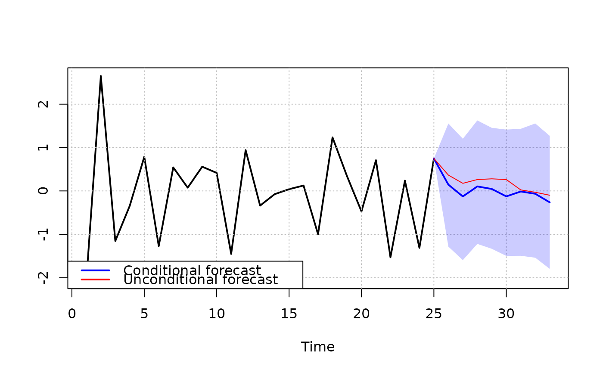
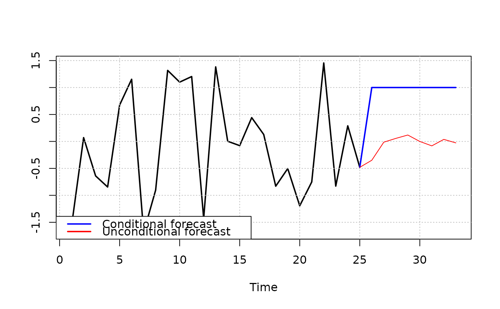

Conditional forecasts from a fitted steady-state BVAR model
Source:R/conditional_forecast.R
conditional_forecast.RdComputes and plots conditional forecasts from a fitted steady-state bvar object.
Conditions are imposed on specific variables at specific horizons using the
method of Dieppe, Legrand, and van Roye (2016). Both conditional and unconditional
forecasts are plotted for comparison. Please note that for the moment, conditional forecasting
is only enabled for the homoscedastic steady-state BVAR, i.e. when SV=FALSE in priors().
Usage
conditional_forecast(
bvar_obj,
conditions,
ci = 0.95,
fcst_type = c("mean", "median"),
growth_rate_idx = NULL,
plot_idx = NULL
)Arguments
- bvar_obj
A steady-state
bvarobject that has been passed throughfit.- conditions
A data frame with three columns:
var(integer index of the conditioned variable),horizon(integer forecast horizon at which the condition is imposed), andvalue(numeric, the imposed condition). Note thatvarandhorizonmust be integers, as they are used for indexing.- ci
Numeric. The prediction interval width. Default
0.95.- fcst_type
Character. Whether to use
"mean"or"median"as the point forecast. Default"mean".- growth_rate_idx
Integer vector. Indices of variables to convert to annual growth rates. Default is
NULL.- plot_idx
Integer vector. Indices of variables to plot. If
NULL(default), all variables are plotted.
Value
Invisibly returns a list with three matrices: forecast, lower, and
upper, each of dimension H x k, as well as cond_draws,
an array of all posterior conditional forecast draws.
References
Dieppe, A., van Roye, B., and Legrand, R. (2016). The BEAR toolbox. Working Paper Series, No. 1934. European Central Bank.
Examples
# \donttest{
#homoscedastic with Jeffreys prior
yt <- matrix(rnorm(50), 25, 2)
bvar_obj <- bvar(data = yt)
bvar_obj <- setup(bvar_obj, p=1, deterministic = "constant")
bvar_obj <- priors(bvar_obj,
lambda_1 = 0.2,
lambda_2 = 0.5,
lambda_3 = 1,
first_own_lag_prior_mean = rep(1,2),
theta_Psi = rep(0, 2),
Omega_Psi = diag(0.1, 2, 2),
Jeffrey = TRUE,
SV = FALSE,
SV_type = NULL,
SV_priors = NULL)
bvar_obj <- fit(bvar_obj,
H = 8,
d_pred = matrix(rep(1,8)),
iter = 200,
warmup = 50,
chains = 1,
cores = 1,
verbose = FALSE)
#>
#> SAMPLING FOR MODEL 'steady_state_bvar_homoscedastic_jeffreys_prior' NOW (CHAIN 1).
#> Chain 1:
#> Chain 1: Gradient evaluation took 6.8e-05 seconds
#> Chain 1: 1000 transitions using 10 leapfrog steps per transition would take 0.68 seconds.
#> Chain 1: Adjust your expectations accordingly!
#> Chain 1:
#> Chain 1:
#> Chain 1: WARNING: There aren't enough warmup iterations to fit the
#> Chain 1: three stages of adaptation as currently configured.
#> Chain 1: Reducing each adaptation stage to 15%/75%/10% of
#> Chain 1: the given number of warmup iterations:
#> Chain 1: init_buffer = 7
#> Chain 1: adapt_window = 38
#> Chain 1: term_buffer = 5
#> Chain 1:
#> Chain 1: Iteration: 1 / 200 [ 0%] (Warmup)
#> Chain 1: Iteration: 20 / 200 [ 10%] (Warmup)
#> Chain 1: Iteration: 40 / 200 [ 20%] (Warmup)
#> Chain 1: Iteration: 51 / 200 [ 25%] (Sampling)
#> Chain 1: Iteration: 70 / 200 [ 35%] (Sampling)
#> Chain 1: Iteration: 90 / 200 [ 45%] (Sampling)
#> Chain 1: Iteration: 110 / 200 [ 55%] (Sampling)
#> Chain 1: Iteration: 130 / 200 [ 65%] (Sampling)
#> Chain 1: Iteration: 150 / 200 [ 75%] (Sampling)
#> Chain 1: Iteration: 170 / 200 [ 85%] (Sampling)
#> Chain 1: Iteration: 190 / 200 [ 95%] (Sampling)
#> Chain 1: Iteration: 200 / 200 [100%] (Sampling)
#> Chain 1:
#> Chain 1: Elapsed Time: 0.034 seconds (Warm-up)
#> Chain 1: 0.1 seconds (Sampling)
#> Chain 1: 0.134 seconds (Total)
#> Chain 1:
#> Warning: Bulk Effective Samples Size (ESS) is too low, indicating posterior means and medians may be unreliable.
#> Running the chains for more iterations may help. See
#> https://mc-stan.org/misc/warnings.html#bulk-ess
#> Warning: Tail Effective Samples Size (ESS) is too low, indicating posterior variances and tail quantiles may be unreliable.
#> Running the chains for more iterations may help. See
#> https://mc-stan.org/misc/warnings.html#tail-ess
conditions <- data.frame(var = rep(2,8),
horizon = rep(1:8),
value = rep(1,8))
cond_fcst <- conditional_forecast(bvar_obj,
conditions,
ci=0.68,
fcst_type = "mean")


# }